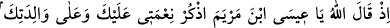
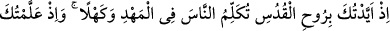
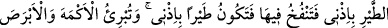
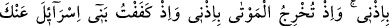
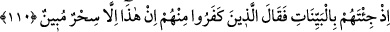

Bil ki kıyâmet günü, Hakk’ın kahhar sıfatıyla tecelli edeceği bir gündür. Allah Teâlâ:
“Bugün hükümranlık kimindir? Tek ve kahhâr olan Allah’ın!” (el-Mü’min, 40/16)
buyurmuştur.
Allâme şeyhimiz Osman Fazlî şöyle demiştir: Bu âyette mükemmel bir tertip
(sıralama) vardır. Çünkü zât-ı ahadiyet, vahdetiyle kesreti, kahrıyla da mevcut her şeyi
ortadan kaldırır. Hepsi yok olur, Allah‘dan başka hiçbir şey (mâsivâ) kalmaz.
Âriflerin kıyâmeti ise daimdir. Çünkü onlar, bulundukları her mekanda olduğu gibi
işleri keşf etmekte ve hâlleri müşahede etmektedirler. Bu ise en büyük kıyâmettir,
havvâsın (seçkinlerin); hatta ehassın (en seçkinlerin) haşridir.
Allahım! Bizi, mecburi ölüm gelmeden, kendi iradesiyle ölenlerden eyle!
110. Allah o zaman şöyle diyecek: “Ey Meryem oğlu Îsâ! Sana ve annene olan
nimetimi hatırla! Hani seni mukaddes ruh (cebrail) ile desteklemiştim; beşikte iken
de yetişkin çağında da insanlarla konuşuyordun. Sana Kitab’ı, hikmeti, Tevrat’ı ve
İncil’i öğretmiştim. Benim iznimle çamurdan, kuş şeklinde bir şey yapıyordun da
ona üflüyordun, hemen benim iznimle o bir kuş oluyordu. Yine benim iznimle
anadan doğma körü ve alacalıyı iyileştiriyordun. Ölüleri benim iznimle (diriltip
kabirden) çıkarıyordun. Hani İsrâiloğullarını (seni öldürmekten) engellemiştim;
kendilerine apaçık deliller (mûcizeler) getirdiğin zaman içlerinden inkâr edenler,
“Bu, apaçık bir sihirden başka bir şey değildir” demişlerdi.
“Allah o zaman şöyle diyecek: Ey Meryem oğlu Îsâ!” yani, ey mü’minler, Allah
Teâlâ’nın Meryem oğlu Îsâ’ya kıyâmet günü hitap edeceği zamanı hatırlayın. “Sana ve
annene olan nimetimi” yani ne nimetler bahşettiğimi “hatırla!” Burada nimetler
zikredilerek Hz. Îsâ’ya verilen “hatırla” emri, onu şükür ile mükellef kılmak için
verilmiş değildir. Çünkü o şükrün vakti dünyâ idi ve o da geçip gitmiştir. Bu emrin
verilmesindeki asıl maksat, bu durumu kâfirler aleyhine bir hüccet (delil) kılmaktır.
Çünkü Allah Teâlâ, Hz. Îsâ’nın elinde pek çok mûcize ortaya çıkarmış, bir grup
(yahudiler) onu yalanlayarak kendisine sihirbaz adını vermişlerdi. Bir diğer grup
(hristiyanlar) da haddi aşarak onu ilah edinmişlerdi. Bu tutumları, her iki grup için